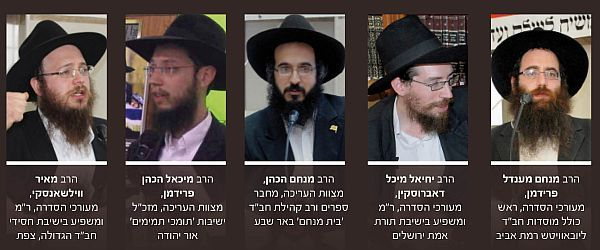

תשנ”ח–ס”ג וכיום הארגון שלהם כבר הפך לסיפור גדול של הצלחה • אפיזודות מרתקות על פר
תשנ”ח–ס”ג וכיום הארגון שלהם כבר הפך לסיפור גדול של הצלחה • אפיזודות מרתקות על פרויקט הדגל “דבר מלכות - פיענוחים” שגרם להגברת החיות והעיסוק בלימוד הדבר מלכות • ‘בית משיח’ מביא השבוע את סיפור ההקמה של המוסד הייחודי ‘ממש’, שבעוד שבוע מציין 13 שנים להקמתו בערב הצדעה
תשנ”ח–ס”ג וכיום הארגון שלהם כבר הפך לסיפור גדול של הצלחה • אפיזודות מרתקות על פרויקט הדגל “דבר מלכות - פיענוחים” שגרם להגברת החיות והעיסוק בלימוד הדבר מלכות • ‘בית משיח’ מביא השבוע את סיפור ההקמה של המוסד הייחודי ‘ממש’, שבעוד שבוע מציין 13 שנים להקמתו בערב הצדעה

סיפורו של ‘ממש’, הוא סיפור של אכפתיות. הארגון שחולש כיום על מלאכת הפצת בשורת הגאולה והגואל בארץ הקודש ומשם לנקודות רבות בעולם כולו, התחיל למעשה עם ‘חלום’ משותף של חבורת תמימים תלמידי ‘קבוצה’ בשנים תשנ”ח–ס”ג שהחליטו בעקשנות לקחת את דרישתו של הרבי מלך המשיח שליט”א: “המעשה הוא העיקר - להביא משיח בפועל ממש” ולתרגם אותה לשפת המעשה.
כבר שלוש עשרה שנה הם מתעקשים ולא מוותרים. הם התגבשו כגרעין של בחורים צעירים, הפיחו חיות מיוחדת בלימוד שיחות ה’דבר מלכות’ משנות תנש”א–תשנ”ב, הפיקו שורה ארוכה ומפוארת של פעולות מקוריות ופרויקטים מרשימים, דרכם הצליחו להגביר את המודעות לשלהבת העשיה בענייני גאולה ומשיח - עד שכל זה התהווה למהפכה ביצועית של ‘ממש’;
מרכז הפצה, שבמשך כל ימות השנה ולקראת חגי ומועדי–ישראל, מוציא מתחת ידו אמצעי עזר וחומרי הסברה שונים עם בשורת הגאולה והגואל; מכון הוצאת ספרים שהוציא לאור כבר למעלה משלושים ספרים בענייני גאולה ומשיח, עליהם נמנים רבי המכר החב”דיים ‘נביא מקרבך’ והאלבום המהודר ‘משיח - תמונות ורגעים’; מבצעי הפצה ארציים; כנסים וימי עיון בנושאי הגאולה; והמיזם המקורי של הקמת ‘בית הספר לתורת הגאולה’ שזכה לתהודה ציבורית רחבה.
בכתבה זו נסקור את ימי ההתחלה של ‘ממש’, לפני למעלה מעשור - בהרמת פרויקט הדגל של ‘ממש’ עם סדרת הספרים ‘דבר מלכות עם פיענוחים’ על השיחות מתנש”א–תשנ”ב. היום, בולטת הסדרה בנוכחותה ובחשיבותה בכל ארון ספרים חב”די. הפרויקט האדיר של ‘הפיענוחים’ נמשך למעלה מחמש שנים, מתוך מסירות והקרבה אינסופית של בחורים נמרצים ומסורים, שעם השנים הצטרפו אליהם חברים נוספים.
אז מי הם אותן דמויות עלומות, תלמידי התמימים שהשקיעו ממיטב זמנם ומרצם כדי להפוך את העולם, כמו שרק צעירים יכולים, עם הרבה אמונה ודבקות בדרך?
את הרעיון לערוך פענוחים על שיחות ה’דבר מלכות’ של נ”א–נ”ב העלה הרב יוסף יצחק פרידמן. תוך זמן קצר התגייסו לרעיון בכירי התמימים היושבים בשבת תחכמוני בישיבת תות”ל - 770, והפרוייקט החל קורם עור וגידים.
על צוות המחקר והעריכה נמנו; הרב מיכל דאברוסקין, ר”מ ומשפיע בישיבת תורת אמת ירושלים; הרב מאיר ווילשאנסקי, ר”מ ומשפיע בישיבת חסידי חב”ד צפת; הרב יהושע נויהויזר, עורך ספרים ור”מ בישיבה גדולה תות”ל אור יהודה; הרב מנחם כהן, רב קהילת חב”ד ‘בית מנחם’ באר שבע; הרב מיכאל פרידמן, מנכ”ל ישיבות תומכי תמימים אור יהודה; הרב ישראל קופצ’יק, ר”מ בישיבת תומכי תמימים ראשון לציון; הרב מנחם מענדל פרידמן, ראש כולל חב”ד רמת אביב, ועוד רבים וטובים.
הימים הם ימי שנת תשס”א - עשור שנים מהבשורה הגדולה בשנת תנש”א. קבוצת תמימים נאמנים לא מסוגלים לשקוט על השמרים. מזמן לזמן הם מתכנסים בחדרי הפנימיה ב–749 וחושבים מה עוד ניתן לעשות כדי לפעול את ההתגלות כאן למטה? כל שבוע הם לומדים את שיחת ה’דבר מלכות’ השבועי, האותיות זעקו מתוך הכתב, למדו באופן של ‘יראה בעל השמועה עומד כנגדו’, ב–770, ואז נפל האסימון.
“לא ייתכן שהשיחות הללו, בהן הרבי מניח את היסודות לחיים החסידיים של דור השביעי, ייבלעו בארון הספרים. חייבים להגיע למצב שתוכנם יהיה נגיש לקהל הרחב באופן הראוי והמכובד ביותר”, אמרו ועשו מעשה.
אחרי שחודשים הרעיון התגלגל בהתוועדויות הפנימיות, בשיחות היום–יומיות, וכולם הסכימו שחייבים דבר מלכות עם פיענוחים - החלו הבחורים להתמסר למלאכת הקודש. הם לא ידעו איך מוציאים ספר, מה השלבים, כיצד עורכים… אך למרות זאת, התחילו לפענח הערה פה והערה שם, דפים עובדו, נכתבו בכתב יד… עד שאט אט הצליח להתגבש סדר עבודה מסויים.
אז כיצד זה עבד? ללא משרד. ללא מכונת צילום. ובוודאי ללא שעות עבודה. השעות: יום ולילה רצופים. כצעד ראשון היה צריך לצלם את הספרים הרלוונטיים, זו עבודה בפני עצמה. מדובר בכאלף צילומים של מראי מקומות עבור כל שיחה! וזה מבלי להתחשב בהוצאות הכספיות לפרויקט ענק ללא כל תקציב.
מספר הרב בצלאל כהן, שנמנה על צוות ההגהה: “באותן שנים טרם היה את “אוצר החכמה” וכדומה, והיו ספרים רבים שהרבי ציין אליהם אך קשה להשיגם. למזלנו, בספריית הרבי מלך המשיח יכולנו להשיג כמעט את כל הספרים, ובכל פעם שנתקלנו בספר נדיר, היינו צריכים לרוץ לספרייה. זכורני שפעם אחת כמעט כל הפענוחים נמצאו חוץ מפיענוח אחד שלא יכלו להשיגו והוא עיכב את כל ההדפסה!”.
“אני זוכר היטב את לילות ההתשה בעת ההגהות האחרונות לפני הדפסה. זה היה מתח עצום של להספיק לעמוד בלוחות הזמנים”.
לאחר מכן היה עליהם להקליד את החומר המצולם, להעבירו להגהה מוקפדת, למסור את הטקסטים לעימוד מיוחד במינו - בדף אחד צריכים להיות גם השיחה גם ההערה וגם הפיענוח והכל באותו עמוד שיהיה נוח לקריאה.
“זה היה מחזה מיוחד”, מספר חבר ‘ממש’ הרב ישראל קופצ’יק, “לראות את ר’ מיכלה דאברוסקין, ר’ מאיר ווילשאנסקי ור’ מענדלה פרידמן יושבים לילות רצופים ולומדים את אלפי הצילומים הללו. כל צילום, כל מאמר, בדיוק מאיזה קטע עד איזה קטע נכון לצטט, מה מתאים ולמה הרבי התכוון במראי מקום זה… הדיונים היו סוערים עד שלפעמים על שורה אחת היו נשמעים צעקות אם להשמיט או להשאיר…”.
“לא מדובר על לילות רצופים אלא על עשרות שעות רצופות ללא שינה! ואחרי ארבעים ושמונה שעות לפתע אחד מהעורכים היה מחליט שחייבים להוסיף עוד קטע נחוץ ואז כל העימוד קיבל צורה חדשה והעבודה כמו החלה מחדש…”. ככלות הכל, הצליח הרב מיכאל פרידמן להביא את העימוד המוצלח, לכדי שלא תהיה הגהה אחת או פיענוח אחד שיהיה מחוץ לעמוד בו הוא אמור להיות.
וכך, אחרי חודשים מספר של עבודה מאומצת הצליחו להוציא לאור את החוברת הראשונה של ‘דבר מלכות - פיענוחים’ מתוך החומר שצולם במכונת צילום בחנות השכונה… אך מהחוברת הזאת יצאה לאור עוד חוברת ועוד חוברת… ולאחר שיצאו מספר חוברות על שיחות בודדות, החלו לצאת הספרים על חומשים שלמים עד שהתהווה לכדי סדרה מפוארת של חמשה ספרים ומוסד ‘ממש’ שקיים כבר 13 שנה.